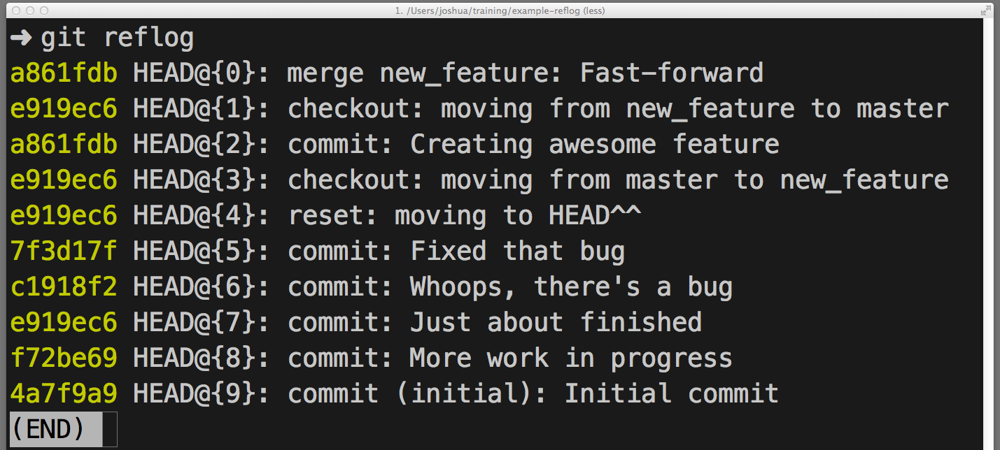
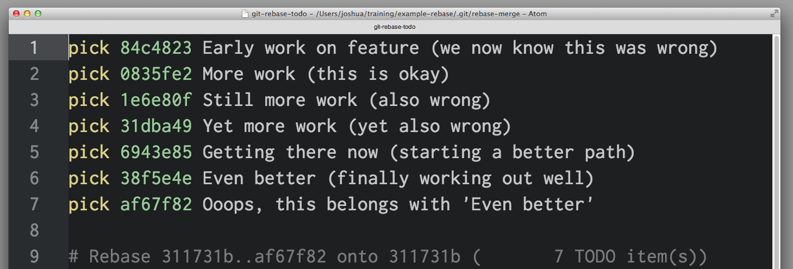
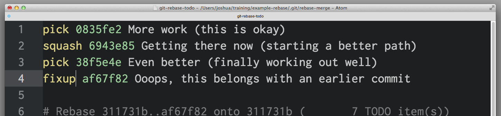
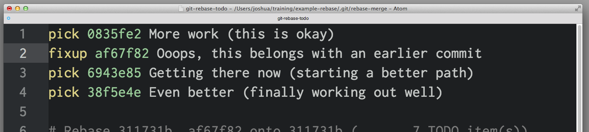
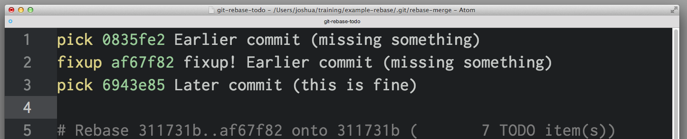

如何在 Git 里撤销（几乎）任何操作
任何版本控制系统的一个最有的用特性就是“撤销 (undo)”你的错误操作的能力。在 Git 里，“撤销” 蕴含了不少略有差别的功能。
当你进行一次新的提交的时候，Git 会保存你代码库在那个特定时间点的快照；之后，你可以利用 Git 返回到你的项目的一个早期版本。
在本篇博文里，我会讲解某些你需要“撤销”已做出的修改的常见场景，以及利用 Git 进行这些操作的最佳方法。
撤销一个“已公开”的改变
场景： 你已经执行了 git push, 把你的修改发送到了 GitHub，现在你意识到这些 commit 的其中一个是有问题的，你需要撤销那一个 commit.
方法： git revert <SHA>
原理： git revert 会产生一个新的 commit，它和指定 SHA 对应的 commit 是相反的（或者说是反转的）。如果原先的 commit 是“物质”，新的 commit 就是“反物质” — 任何从原先的 commit 里删除的内容会在新的 commit 里被加回去，任何在原先的 commit 里加入的内容会在新的 commit 里被删除。
这是 Git 最安全、最基本的撤销场景，因为它并不会改变历史 — 所以你现在可以 git push 新的“反转” commit 来抵消你错误提交的 commit。
修正最后一个 commit 消息
场景： 你在最后一条 commit 消息里有个笔误，已经执行了 git commit -m "Fxies bug #42"，但在 git push 之前你意识到消息应该是 "Fixes bug #42"。
方法： git commit --amend 或 git commit --amend -m "Fixes bug #42"
原理： git commit --amend 会用一个新的 commit 更新并替换最近的 commit ，这个新的 commit 会把任何修改内容和上一个 commit 的内容结合起来。如果当前没有提出任何修改，这个操作就只会把上次的 commit 消息重写一遍。
撤销“本地的”修改
场景： 一只猫从键盘上走过，无意中保存了修改，然后破坏了编辑器。不过，你还没有 commit 这些修改。你想要恢复被修改文件里的所有内容 — 就像上次 commit 的时候一模一样。
方法： git checkout -- <bad filename>
原理： git checkout 会把工作目录里的文件修改到 Git 之前记录的某个状态。你可以提供一个你想返回的分支名或特定 SHA ，或者在缺省情况下，Git 会认为你希望 checkout 的是 HEAD，当前 checkout 分支的最后一次 commit。
记住： 你用这种方法“撤销”的任何修改真的会完全消失。因为它们从来没有被提交过，所以之后 Git 也无法帮助我们恢复它们。你要确保自己了解你在这个操作里扔掉的东西是什么！（也许可以先利用 git diff 确认一下）
重置“本地的”修改
场景： 你在本地提交了一些东西（还没有 push），但是所有这些东西都很糟糕，你希望撤销前面的三次提交 — 就像它们从来没有发生过一样。
方法： git reset <last good SHA> 或 git reset --hard <last good SHA>
原理： git reset 会把你的代码库历史返回到指定的 SHA 状态。 这样就像是这些提交从来没有发生过。缺省情况下，git reset 会保留工作目录。这样，提交是没有了，但是修改内容还在磁盘上。这是一种安全的选择，但通常我们会希望一步就“撤销”提交以及修改内容 — 这就是 --hard 选项的功能。
在撤销“本地修改”之后再恢复
场景： 你提交了几个 commit，然后用 git reset --hard 撤销了这些修改（见上一段），接着你又意识到：你希望还原这些修改！
方法： git reflog 和 git reset 或 git checkout
原理： git reflog 对于恢复项目历史是一个超棒的资源。你可以恢复几乎 任何东西 — 任何你 commit 过的东西 — 只要通过 reflog。
你可能已经熟悉了 git log 命令，它会显示 commit 的列表。git reflog 也是类似的，不过它显示的是一个 HEAD 发生改变的时间列表.
一些注意事项：
- 它涉及的只是
HEAD的改变。在你切换分支、用git commit进行提交、以及用git reset撤销commit时，HEAD会改变，但当你用git checkout -- <bad filename>撤销时（正如我们在前面讲到的情况），HEAD并不会改变 — 如前所述，这些修改从来没有被提交过，因此reflog也无法帮助我们恢复它们。 git reflog不会永远保持。Git 会定期清理那些 “用不到的” 对象。不要指望几个月前的提交还一直躺在那里。- 你的
reflog就是你的，只是你的。你不能用git reflog来恢复另一个开发者没有push过的commit。

那么…你怎么利用 reflog 来“恢复”之前“撤销”的 commit 呢？它取决于你想做到的到底是什么：
- 如果你希望准确地恢复项目的历史到某个时间点，用
git reset --hard <SHA> - 如果你希望重建工作目录里的一个或多个文件，让它们恢复到某个时间点的状态，用
git checkout <SHA> -- <filename> - 如果你希望把这些
commit里的某一个重新提交到你的代码库里，用git cherry-pick <SHA>
利用分支的另一种做法
场景： 你进行了一些提交，然后意识到你开始 check out 的是 master 分支。你希望这些提交进到另一个特性（feature）分支里。
方法： git branch feature, git reset --hard origin/master, and git checkout feature
原理： 你可能习惯了用 git checkout -b <name> 创建新的分支 — 这是创建新分支并马上 check out 的流行捷径 — 但是你不希望马上切换分支。这里， git branch feature 创建一个叫做 feature 的新分支并指向你最近的 commit，但还是让你 check out 在 master 分支上。
下一步，在提交任何新的 commit 之前，用 git reset --hard 把 master 分支倒回 origin/master 。不过别担心，那些 commit 还在 feature 分支里。
最后，用 git checkout 切换到新的 feature 分支，并且让你最近所有的工作成果都完好无损。
及时分支，省去繁琐
场景： 你在 master 分支的基础上创建了 feature 分支，但 master 分支已经滞后于 origin/master 很多。现在 master 分支已经和 origin/master 同步，你希望在 feature 上的提交是从现在开始，而不是也从滞后很多的地方开始。
方法： git checkout feature 和 git rebase master
原理： 要达到这个效果，你本来可以通过 git reset (不加 --hard, 这样可以在磁盘上保留修改) 和 git checkout -b <new branch name> 然后再重新提交修改，不过这样做的话，你就会失去提交历史。我们有更好的办法。
git rebase master 会做如下的事情：
- 首先它会找到你当前
check out的分支和master分支的共同祖先。 - 然后它
reset当前check out的分支到那个共同祖先，在一个临时保存区存放所有之前的提交。 - 然后它把当前
check out的分支提到master的末尾部分，并从临时保存区重新把存放的commit提交到master分支的最后一个commit之后。
大量的撤销/恢复
场景： 你向某个方向开始实现一个特性，但是半路你意识到另一个方案更好。你已经进行了十几次提交，但你现在只需要其中的一部分。你希望其他不需要的提交统统消失。
方法： git rebase -i <earlier SHA>
原理： -i 参数让 rebase 进入“交互模式”。它开始类似于前面讨论的 rebase，但在重新进行任何提交之前，它会暂停下来并允许你详细地修改每个提交。
rebase -i 会打开你的缺省文本编辑器，里面列出候选的提交。如下所示：

前面两列是键：第一个是选定的命令，对应第二列里的 SHA 确定的 commit。缺省情况下， rebase -i 假定每个 commit 都要通过 pick 命令被运用。
要丢弃一个 commit，只要在编辑器里删除那一行就行了。如果你不再需要项目里的那几个错误的提交，你可以删除上例中的1、3、4行。
如果你需要保留 commit 的内容，而是对 commit 消息进行编辑，你可以使用 reword 命令。 把第一列里的 pick 替换为 reword (或者直接用 r)。有人会觉得在这里直接重写 commit 消息就行了，但是这样不管用 rebase -i 会忽略 SHA 列前面的任何东西。它后面的文本只是用来帮助我们记住 0835fe2 是干啥的。当你完成 rebase -i 的操作之后，你会被提示输入需要编写的任何 commit 消息。
如果你需要把两个 commit 合并到一起，你可以使用 squash 或 fixup 命令，如下所示：

squash 和 fixup 会“向上”合并 — 带有这两个命令的 commit 会被合并到它的前一个 commit 里。在这个例子里， 0835fe2 和 6943e85 会被合并成一个 commit， 38f5e4e 和 af67f82 会被合并成另一个。
如果你选择了 squash， Git 会提示我们给新合并的 commit 一个新的 commit 消息； fixup 则会把合并清单里第一个 commit 的消息直接给新合并的 commit 。 这里，你知道 af67f82 是一个“完了完了….” 的 commit，所以你会留着 38f5e4e as的 commit 消息，但你会给合并了 0835fe2 和 6943e85 的新 commit 编写一个新的消息。
在你保存并退出编辑器的时候，Git 会按从顶部到底部的顺序运用你的 commit。你可以通过在保存前修改 commit 顺序来改变运用的顺序。如果你愿意，你也可以通过如下安排把 af67f82 和 0835fe2 合并到一起：

修复更早期的 commit
场景： 你在一个更早期的 commit 里忘记了加入一个文件，如果更早的 commit 能包含这个忘记的文件就太棒了。你还没有 push，但这个 commit 不是最近的，所以你没法用 commit --amend.
方法： git commit --squash <SHA of the earlier commit> 和 git rebase --autosquash -i <even earlier SHA>
原理： git commit --squash 会创建一个新的 commit ，它带有一个 commit 消息，类似于 squash! Earlier commit。 (你也可以手工创建一个带有类似 commit 消息的 commit，但是 commit --squash 可以帮你省下输入的工作。)
如果你不想被提示为新合并的 commit 输入一条新的 commit 消息，你也可以利用 git commit --fixup 。在这个情况下，你很可能会用 commit --fixup ，因为你只是希望在 rebase 的时候使用早期 commit 的 commit 消息。
rebase --autosquash -i 会激活一个交互式的 rebase 编辑器，但是编辑器打开的时候，在 commit 清单里任何 squash 和 fixup 的 commit 都已经配对到目标 commit 上了，如下所示：

在使用 --squash 和 --fixup 的时候，你可能不记得想要修正的 commit 的 SHA 了— 只记得它是前面第 1 个或第 5 个 commit。你会发现 Git 的 ^ 和 ~ 操作符特别好用。HEAD^ 是 HEAD 的前一个 commit。 HEAD~4 是 HEAD 往前第 4 个 – 或者一起算，倒数第 5 个 commit。
停止追踪一个文件
场景： 你偶然把 application.log 加到代码库里了，现在每次你运行应用，Git 都会报告在 application.log 里有未提交的修改。你把 *.login 放到了 .gitignore 文件里，可文件还是在代码库里 — 你怎么才能告诉 Git “撤销” 对这个文件的追踪呢？
方法： git rm --cached application.log
原理： 虽然 .gitignore 会阻止 Git 追踪文件的修改，甚至不关注文件是否存在，但这只是针对那些以前从来没有追踪过的文件。一旦有个文件被加入并提交了，Git 就会持续关注该文件的改变。类似地，如果你利用 git add -f 来强制或覆盖了 .gitignore， Git 还会持续追踪改变的情况。之后你就不必用 -f 来添加这个文件了。
如果你希望从 Git 的追踪对象中删除那个本应忽略的文件， git rm --cached 会从追踪对象中删除它，但让文件在磁盘上保持原封不动。因为现在它已经被忽略了，你在 git status 里就不会再看见这个文件，也不会再偶然提交该文件的修改了。
这就是如何在 Git 里撤销任何操作的方法。要了解更多关于本文中用到的 Git 命令，请查看下面的有关文档：
原文地址：https://github.com/blog/2019-how-to-undo-almost-anything-with-git
译文地址：http://blog.jobbole.com/87700/
如何在 Git 里撤销（几乎）任何操作